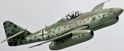

Un cañón antitanque es un tipo de pieza de artillería desarrollada específicamente para destruir tanques. Actualmente obsoletas, estas armas fueron una de las principales defensas contra los blindados durante el período de entreguerras y la Segunda Guerra Mundial. Fue durante la Segunda Guerra Mundial que los cañones antitanque evolucionaron de manera más significativa. Con la mejora constante y rápida de los blindajes, los cañones antitanque tuvieron que adaptarse aumentando su calibre y potencia. Con un total de 3 generaciones de cañones, siempre crecientes, los modelos finales fueron muy pesados. Al mismo tiempo, aparecieron alternativas más ligeras y efectivas como el cañón sin retroceso o el misil antitanque, que acabarían sustituyéndolos.
Hubieron muchos modelos de antitanque:
Se destacan algunos como el cañon antitanque Hotchkiss de 25 mm, un cañón antitanque francés que fue empleado principalmente en los primeros años de la Segunda Guerra Mundial.
Historia y desarrollo.
A inicios de la década de 1920, el Ejército francés se dio cuenta que la capacidad antiblindaje del cañón de infantería TRP 37 mm sería insuficiente contra los tanques modernos. En 1926, la empresa Hotchkiss et Cie propuso un diseño propio de 25 mm que eventualmente fue aceptado en servicio bajo la denominación canon de 25 mm semi-automatique modèle 1934 (generalmente acortado a canon de 25). Al inicio de la Segunda Guerra Mundial, era la principal arma antitanque de la Infantería francesa. Hacia mayo de 1940, se reportó que habían 6.000 cañones Hotchkiss 25 mm en servicio con el Ejército francés, a pesar que algunas unidades todavía estaban esperando que les fuese suministrado.
Al ser empleado durante la Batalla de Francia en 1940, se descubrió que su proyectil era demasiado pequeño para ser eficaz contra los tanques alemanes, especialmente a largo alcance. Continuó siendo un arma útil contra automóviles blindados y otros vehículos con blindaje ligero.
Empleo en el extranjero
En 1935, el Ejército de los Estados Unidos compró el cañón antitanque Hotchkiss 25 mm para evaluarlo.4 Turquía compró 400 cañones durante el período de entreguerras.5 Al desembarcar en Francia en 1939, la Fuerza Expedicionaria Británica tenía una cantidad insuficiente de armas antitanque, tales como el Cañón QF de 2 libras. Se le suministró 3005 canons de 25, que en servicio británico fueron conocidos como Cañón Anti-Tanque, Hotchkiss 25 mm, sobre Afuste de 25 mm, Mark I. En servicio británico, la FEB estaba completamente mecanizada y trató de remolcar el cañón con sus vehículos, pero rápidamente descubrió que no era lo suficientemente robusto, al haber sido diseñado para ser remolcado por caballos. La solución fue emplear el cañón como un portee, que es transportarlo en la tolva de un camión. Fue la primera pieza de artillería en ser empleada de esta forma.6 Los cañones capturados por los alemanes fueron empleados con la denominación 2,5 cm PaK 113(f). Algunos cañones capturados también entraron en servicio italiano en el norte de África como alternativas al fusil antitanque Solothurn S-18/1000,7 con la denominación Cannone da 25/72. Finlandia compró 50 cañones franceses M/37 de 25 mm durante la Guerra de Invierno, pero solamente 40 de estos fueron suministrados en febrero de 1940 a través de Noruega. Los diez cañones restantes fueron capturados por los alemanes cuando invadieron Noruega en la primavera de 1940. Casi la mitad de los cañones que llegaron durante la Guerra de Invierno fueron empleados en primera línea, tres de estos siendo destruidos en combate. Durante la Paz Interina, los alemanes vendieron 200 cañones capturados a Finlandia. De estos, 133 eran modelo M/34 y 67 eran modelo M/37, siendo denominados 25 PstK/34 y 25 PstK/37, respectivamente. Fueron retirados de la primera línea hacia 1943.
|
|

|

|

|

|